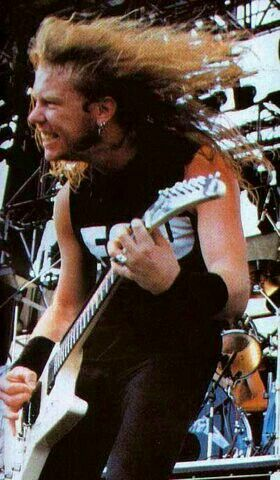
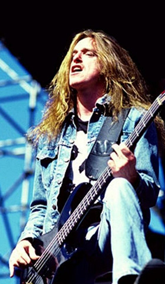
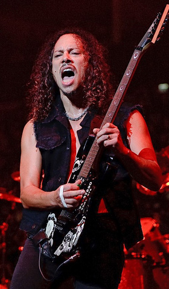
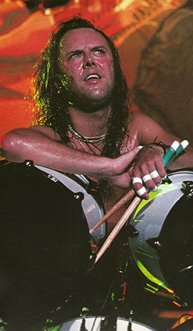
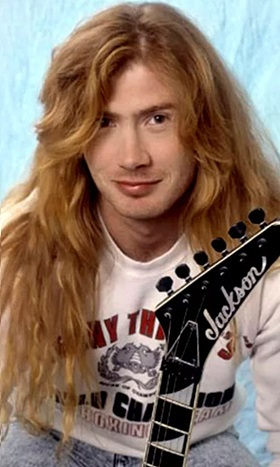
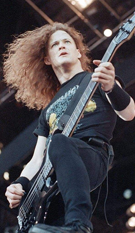
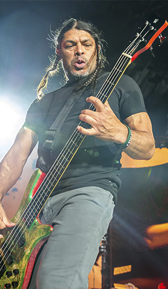

Linea de Tiempo de los Integrantes de Metallica

James Hetfield
James Alan Hetfield (Downey, California, 3 de agosto de 1963) es un músico estadounidense conocido por ser el vocalista, guitarrista rítmico y principal compositor de la banda de thrash metal Metallica ,además de ser cofundador de la misma junto con Lars Ulrich.
Cliff Burton
Clifford Lee Burton (Castro Valley, California; 10 de febrero de 1962 - Kronoberg, Suecia; 27 de septiembre de 1986), más conocido como Cliff Burton, fue un músico estadounidense de thrash metal, conocido por haber sido el bajista de Metallica desde el año 1982 hasta su prematura muerte en un accidente de carretera
Kirk Hammett
Hammett es de ascendencia filipina por parte materna e irlandesa-estadounidense por parte paterna. Desde muy joven mostró un gran interés en la música ya que empezó a tocar la guitarra desde que tenía aproximadamente trece o catorce años.
lars ulrich
Lars Ulrich (Gentofte, 26 de diciembre de 1963) es un músico danés conocido principalmente por ser el baterista, compositor, fundador y líder (junto a James Hetfield) de la banda de thrash metal estadounidense Metallica.
Dave Mustaine
David «Dave» Scott Mustaine (La Mesa, California, 13 de septiembre de 1961) es un músico estadounidense, conocido por ser el fundador, guitarrista, vocalista y principal compositor de la banda de thrash metal Megadeth, así como por ser anteriormente guitarrista de la banda Metallica.
Jason Newsted
Newsted nació el 4 de marzo de 1963 y creció en Battle Creek, Míchigan, Estados Unidos. Desde temprana edad sintió un gran interés hacia el heavy metal y quiso aprender a tocar el bajo cuando conoció a Gene Simmons de Kiss, pero su bajista preferido era Geezer Butler de Black Sabbath.
Robert Trujillo
Creció cerca de Santa Mónica, en Venice (California), más concretamente en Dogtown. Trujillo tiene raíces mexicanas, pues su madre es de León (México) y su padre de Nuevo México. En su adolescencia escuchaba música variada, desde Led Zeppelin hasta Motown con un poco de funk.
Ron McGovney
McGovney es originario de Irlanda del Norte. Tiene dos hijos, Justin y Tyler, ambos con el mismo interés musical que su padre, y una hija, Jordann. En la actualidad es profesor en una preparatoria y reside en la localidad de Marion, Carolina del Norte.
Ron McGovney y James Hetfield 1982